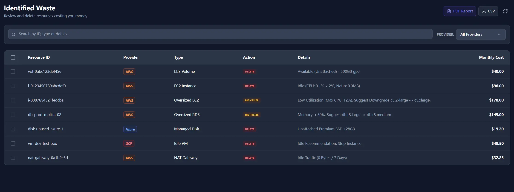

Rightsizing for Azure and GCP Is Live
Azure and GCP rightsizing now lands in the same review flow as AWS, so teams can compare oversized machines without changing tools or process.
Coverage
Three major clouds, one queue
Rightsizing candidates from AWS, Azure, and GCP show up in a single review path.
Decision support
Provider-specific logic stays visible
Each recommendation still reflects the metric source and rule style of the provider behind it.
Boundary
Analysis remains local
Usage data is pulled from provider APIs, evaluated locally, and kept inside the operator workflow.
Teams kept asking the same question after AWS rightsizing launched: can we review Azure and GCP oversized machines the same way, without standing up a second workflow?
The answer is now yes. Dead-resource cleanup is only part of cloud cost control. A larger share of waste usually sits in machines that are healthy, always on, and simply larger than the workload needs.

What changed in practice
Rightsizing is now available for Azure and GCP alongside AWS. That matters because most teams do not overspend in a single cloud forever. The real problem is that each provider describes the same waste pattern with different naming, metrics, and recommendation styles.
Instead of forcing operators to keep three mental models open, the product normalizes them into one review list and keeps the provider detail where it still matters.
How each provider is handled
 Microsoft Azure
Microsoft Azure
Azure recommendations are based on Azure Monitor data across the review window. Oversized machines are flagged when the usage pattern stays low enough to support a safe downgrade discussion.
 Google Cloud
Google Cloud
For GCP, the flow incorporates Google Recommender output so teams can review machine type changes with the provider recommendation already in view.
Why the unified view matters
Multi-cloud cost reviews often break down for a simple reason: by the time an operator reaches the third console, the meeting has already shifted from action to explanation. A normalized list makes the conversation shorter. Which machines are oversized? What is the likely downgrade path? Which team owns the follow-up? Those questions can be answered in one pass.
That is the real benefit here. It is not only more provider coverage. It is fewer context switches during weekly review.
The boundary stays the same
This addition does not change the trust model. Rightsizing analysis still runs locally. The client pulls metrics from the provider API, evaluates the recommendation in the operator environment, and renders the result without shipping the underlying infrastructure inventory to a hosted analytics plane.
That keeps the feature easier to explain in enterprise review: broader coverage, same narrow boundary.
For rollout history and policy logic, review Rightsizing Launch and Engineering Trust, Customer Value, ESG.
Review multi-cloud rightsizing in one pass
Save your first $1,000 before the next billing cycle.